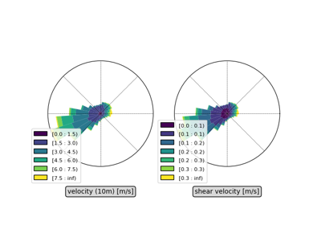

Examples#
Below is a gallery of examples demonstrating the use of several functions of PyDune.


Properties of a turbulent flow on a sinusoidal bottom
Properties of a turbulent flow on a sinusoidal bottom
Tutorials#
Below is a gallery of longer tutorials using several functions of PyDune.



From wind data to sand fluxes and dune orientations
From wind data to sand fluxes and dune orientations